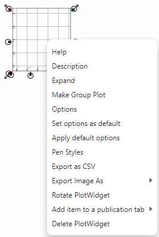

Next:
Description
Up:
Plot widget
Previous:
Plot widget
Contents
Plot context menu
The plot context menu is:

Subsections
Description
Expand
Make Group Plot
Options
Set options as default
Apply default options
Pen Styles
Export as CSV